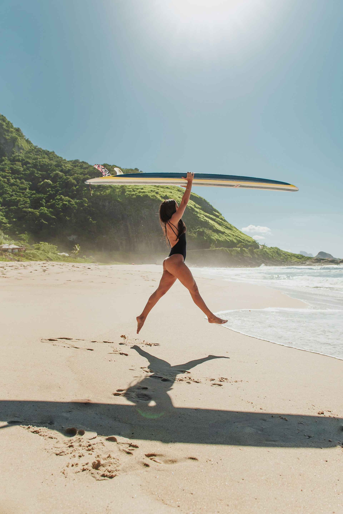
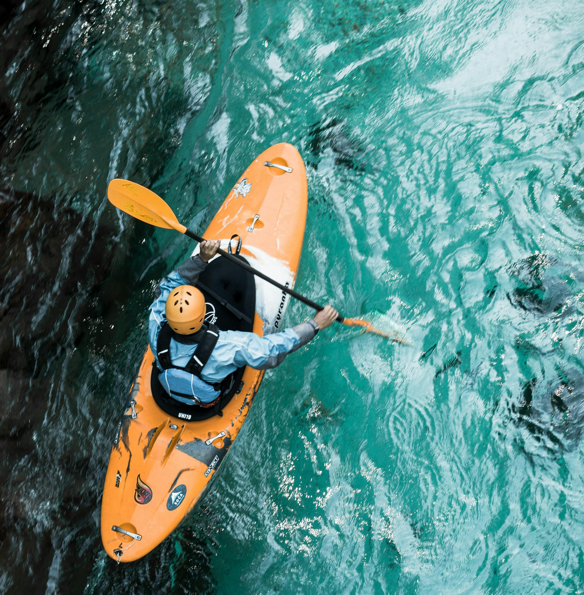
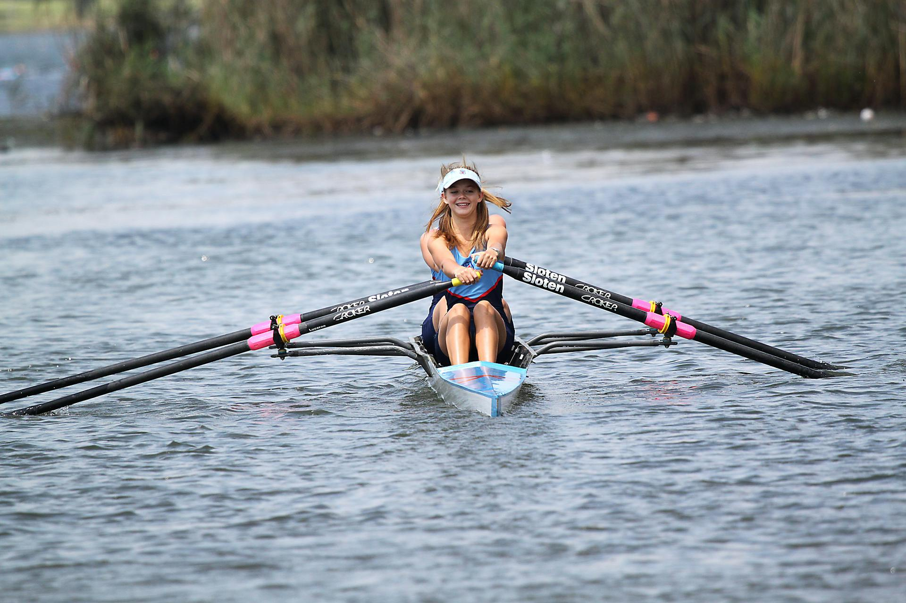
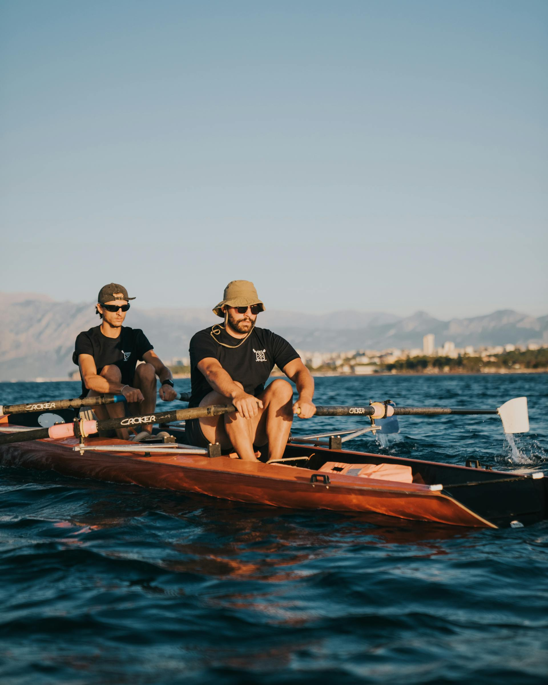

Surf

Rafting

Aviron

Kayak

Nichée au bord de la côte, notre association est un véritable havre de paix pour tous les passionnés de sports aquatiques et de plein air. Chez Côte & Sport, nous croyons que le sport est bien plus qu'une simple activité physique; c'est une manière de se connecter à la nature, de partager des moments inoubliables et de vivre des aventures extraordinaires.
Nos activités variées, allant du surf au rafting, en passant par l'aviron et le beach volley, sont conçues pour tous les niveaux, des débutants aux plus expérimentés. Que vous souhaitiez dompter les vagues, glisser sur les rivières ou profiter du sable chaud tout en jouant au volley, nous avons quelque chose pour chacun d'entre vous.
Nos sites, choisis pour leur beauté exceptionnelle, vous offrent un cadre idyllique où l'océan rencontre le ciel. Avec des paysages à couper le souffle, vous pourrez non seulement vous adonner à votre passion, mais aussi profiter de moments de détente et de convivialité avec d'autres membres de notre communauté.
Rejoignez-nous chez Côte & Sport et laissez-vous emporter par l'énergie de la côte. Ensemble, nous partagerons des expériences enrichissantes et créerons des souvenirs mémorables. Que vous soyez ici pour le plaisir, la compétition ou simplement pour découvrir de nouvelles passions, notre équipe est là pour vous accompagner à chaque étape.
Surf
Rafting
Aviron
Kayak